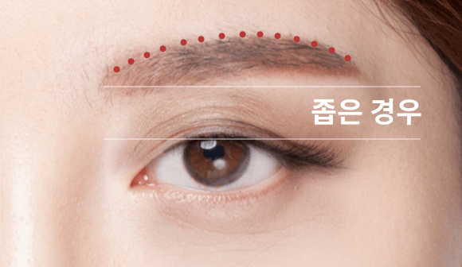
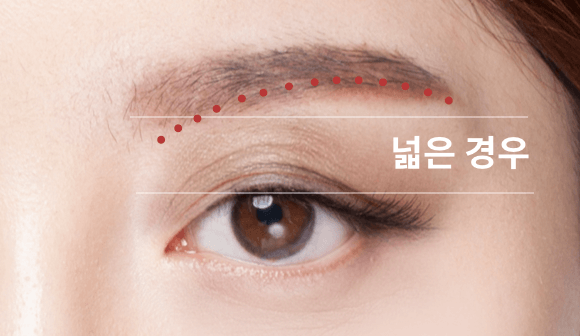
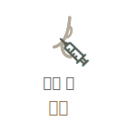
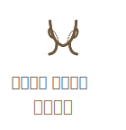

쌍커풀 없이도
자연스러운 동안눈!
#눈썹
거상술
-

수술 시간
1시간
-

마취방법
수면/국소마취
-

실밥제거
4~5일후
-

내원치료
1~2회
-

회복기간
7일 이내
눈썹 거상술이란?
눈썹 위 또는 아래를 절개하여 처진
피부를 당겨 주름을 개선하는 수술입니다.
상안검수술과 비슷하지만 절개 부위가
눈썹이기 때문에 피부가 두껍고 단단한
경우에도 수술이 가능하여 쌍커풀
수술없이도 눈매를 바로 잡아주는
자연스러움으로 선호도가 높은
수술법입니다.

눈썹거상술 수술방법
-

1
눈과 눈썹 사이의 거리가 좁은 경우
눈썹 위 절개
-

2
눈과 눈썹 사이의 거리가 넓은 경우
눈썹 아래 절개
눈썹 거상술과
상안검의 차이점
단순 하안검성형과 확장형 하안검성형의
차이점을 이해하고 전문의와의 자세한
상담과 진단을 통해 환자분에게 적합한
방법으로
수술을 진행합니다.
눈썹 거상술
상안검
-

눈썹 부근의 절개를
통해 처진 피부를 끌
어올려 제거
피부가 두껍고 단단
한 경우
눈꼬리부분이 처진
경우
쌍커풀을 만들기 않
아도 가능
쌍커풀 라인의 변화
없이 개선을 원하는
경우
눈썹이 처진 경우
-
눈아래 불거진
지방 외에 눈물고랑
및 처진 앞광대
처진 눈꺼풀의
불필요한 조직을
제거
쌍커풀 라인 개선
가능
눈썹 처짐 없이
눈꺼풀 처짐만
있는 경우
사후 관리 시스템

연세 자연미
SELF CARE 파우치 제공
통증과 붓기를 줄여주고 일상생활로의 빠른
복귀를 위해 수술 후 체계적이고 다양한
사후관리 시스템을 진행하고 있습니다.
함께하면좋은 시술
연세자연미성형외과는 개인의 상태에
따른 노화 증상과 원인에 맞는
여러가지
시술들을 복합적으로 진행하는 맞춤형
안티에이징 수술법
으로 자연스럽게
젊어지는 아름다움을 선물해드립니다.
-

-

-

-

연세자연미만의
Anti-Aging
솔루션
안티에이징 성형은 미용을 위한 일반적인 젊은 층의 성형과는 접근을 달리해야 합니다. 연세자연미는 노화로 인해 환자가 고민하는 부위를 확실히 개선함과 동시에 수술과 회복에 대한 부담을 줄일 수 있는 안티에이징 성형을 추구합니다.
-
01
화려한 변화보다는 자연스러움이
중요합니다. -
02
수술에 대한 부담이 적어야 합니다.
-
03
기능적인 부분까지 개선되어야
합니다.